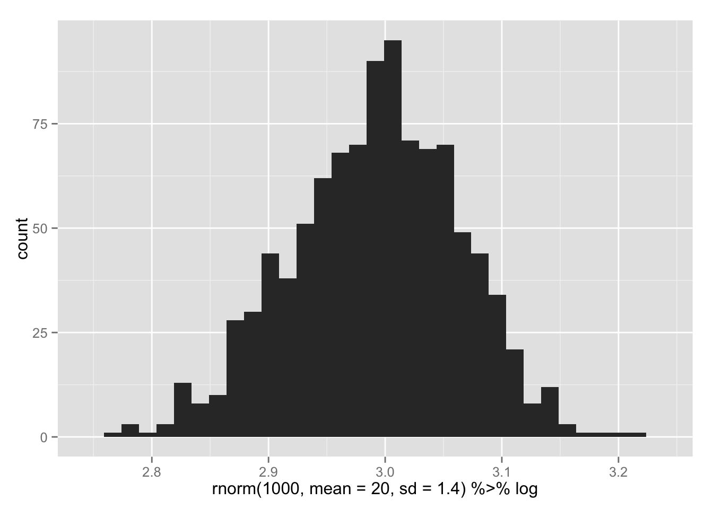
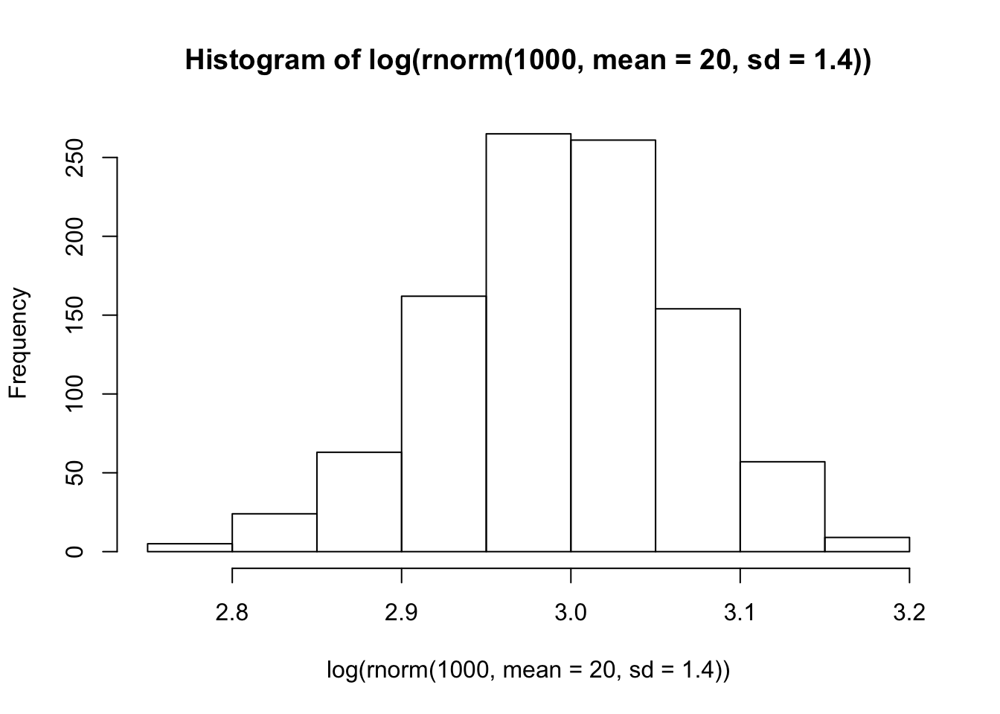

R is a programming language, which means that it gives you all the tools you need to automate repetitive tasks. There are three (or more) main ways to do this:
for loopslapply() functiondplyr packagefor loops will be familiar if you have ever used any other programming languages. The basic structure looks like this:
vector <- 1:10
for(i in vector){
#do something with i
}Here is a (slightly) more complicated example.
myVector <- 1:10
for(counter in myVector){
result <- paste("counter ^ 2 = ", counter^2)
print(result)
}## [1] "counter ^ 2 = 1"
## [1] "counter ^ 2 = 4"
## [1] "counter ^ 2 = 9"
## [1] "counter ^ 2 = 16"
## [1] "counter ^ 2 = 25"
## [1] "counter ^ 2 = 36"
## [1] "counter ^ 2 = 49"
## [1] "counter ^ 2 = 64"
## [1] "counter ^ 2 = 81"
## [1] "counter ^ 2 = 100"We loop over a vector 1:100, and sequentially assign its values to a temporary variable we are calling counter. (Note: we can call this variable whatever we want.) Then R does what is within the curly braces {} for each iteration of the loop. In this case, it pastes together some text with the square of the value of counter and prints this all to the console.
After running the above code, what is the value of counter? What is the value of myVector? Has this value changed?
Often, we want to do some calculations, and save the results outside of the for loop. To do this, we can create a results vector in advance that is the same length as the vector we are looping over, then we can save the results each time in the appropriate slot.
myVector <- runif(100, min = 1, max=10)
myVector## [1] 9.052200 4.755837 4.041330 9.615019 7.023912 2.051376 5.448219 3.775062 2.343869 4.297506 8.442796 5.844657
## [13] 5.576762 2.720849 9.533859 5.165883 5.930047 4.237948 3.299478 3.512394 2.916147 4.518328 8.817803 1.383540
## [25] 1.995718 9.353005 6.088546 9.419797 7.741363 3.915831 3.664903 5.571528 4.554139 1.212624 9.965034 9.542899
## [37] 3.173466 1.630336 2.926888 4.413496 4.521329 7.093315 3.545027 8.968127 1.454601 1.853548 2.533851 2.374461
## [49] 2.136784 6.624346 5.061831 7.977611 3.539097 6.439677 6.606383 4.746260 2.830913 4.091372 8.795207 2.893481
## [61] 5.559633 5.552163 5.152991 7.427734 9.014909 7.891438 1.218127 4.017456 1.301932 2.762268 8.501811 4.019129
## [73] 7.681727 3.771287 3.663715 7.765624 1.679457 6.445901 4.779300 6.362745 4.191510 5.926705 5.221572 7.952945
## [85] 2.720563 5.568931 9.946892 1.270282 4.086953 4.788619 2.693759 9.490166 2.316155 7.904102 1.746978 1.863813
## [97] 9.352211 2.470102 5.796589 2.509854results <- numeric(100)
for(each in 1:length(myVector)){
results[each] <- paste(myVector[each], "^ 2 = ", myVector[each]^2)
}
##now get some of the stored results
results[50]## [1] "6.62434643576853 ^ 2 = 43.8819657010792"results[73]## [1] "7.68172709573992 ^ 2 = 59.0089311734248"if statementsOften during a loop, you may want to do a test and do something different based on the results of the test. Imagine a vector of germination outcomes from a seed experiment. 0 indicates the seed did not germinate due to insect predatoin, 1 indicates that it did not germinate but no insect predation occurrend, 2 indicates that the seed germinated. We can use the if() function to evaluate the outcome and provide context specific output.
outcomes <- c(0,1,0,2,0,1,0,2,0,1,0,1,0,0)
for(trial in outcomes){
if(trial == 2) print("Welcome to the world, plantling!")
else print("RIP")
}## [1] "RIP"
## [1] "RIP"
## [1] "RIP"
## [1] "Welcome to the world, plantling!"
## [1] "RIP"
## [1] "RIP"
## [1] "RIP"
## [1] "Welcome to the world, plantling!"
## [1] "RIP"
## [1] "RIP"
## [1] "RIP"
## [1] "RIP"
## [1] "RIP"
## [1] "RIP"Write a for loop to examine the law of large numbers to illustrate how, as sample size increases, estimates of the mean of a population converge on the true value. Do this in the following steps:
i from 1 to 2000rnorm() function to simulate a sample of size i from a population with a mean of 100 and standard deviation of 30.The function lapply() is like a for loop, but is optimized and explicitly functional. lapply() usually takes two arguments X which is a list or a vector to loop over, and FUN which is a function to apply to each element of X. Thus, FUN must be able to accept any element of X as an argument. The clearest way is to write your own function.
Functions are the best way to encapsulate code that you want to repeat again and again. A function accepts arguments and returns a single (and only a single) object (but this can be a single number, list, dataframe, vector, etc.). Variable names defined within a function only exist within the function (not within the global environment).
is.even <- function(number){
if(number %% 2 == 0) {return("The number is even")}
else {return("The number is not even")}
}
is.even(1233)## [1] "The number is not even"is.even(1234)## [1] "The number is even"is.even(-1.2)## [1] "The number is not even"The “l” in lapply() stands for “list”, because that’s what you get as a result. Lists are kind of like vectors, but with important differences:
myList <- list(firstOne=1, nextOne="too", lastOne=rnorm(10))
myList## $firstOne
## [1] 1
##
## $nextOne
## [1] "too"
##
## $lastOne
## [1] 0.2948232 0.9527212 -0.5113750 -0.9157645 1.8008291 0.7554610 -1.4375452 0.9858012 0.2838533 0.5147444[[]] to index a listmyList[[3]]## [1] 0.2948232 0.9527212 -0.5113750 -0.9157645 1.8008291 0.7554610 -1.4375452 0.9858012 0.2838533 0.5147444$ operatormyList$nextOne## [1] "too"$ operator before?What does this suggest about the relationship between list and dataframes?
We can store complex results from each iteration, and then come back to these results later.
# note, we must accept an argument
# even if we don't do anything with this argument.
summarizeRandom <- function(n){
sample <- rnorm(n)
mySummary <- summary(sample)
return(mySummary)
}
sampleSizes <- 100:200
myResults <- lapply(sampleSizes, FUN=summarizeRandom)
myResults[1:3]## [[1]]
## Min. 1st Qu. Median Mean 3rd Qu. Max.
## -3.2130 -0.8428 -0.2877 -0.1844 0.4924 3.2540
##
## [[2]]
## Min. 1st Qu. Median Mean 3rd Qu. Max.
## -2.5640 -0.7572 -0.0448 -0.1151 0.5729 1.6130
##
## [[3]]
## Min. 1st Qu. Median Mean 3rd Qu. Max.
## -3.30200 -0.91610 -0.01143 -0.09876 0.72350 2.66400This a user-contributed package that has kind of revolutionized working with data in R. It provides a consistent and simpler interface to do things that you could also do using loops or base functions in R. It is less flexible than a for loop or lapply(), but it is easier to use, and works for the most common data manipulation tasks.
dplyr is very consistent: it assumes that you are starting with a dataframe, doing something to that dataframe, and finishing with a different dataframe. (Many of the base functions operate on vectors, which makes it more complicated to apply them to dataframes.) dplyr introduces a series of simple ‘verbs’ that describe many common data manipulation tasks.
We will use a dataset on student loans in public and private universities. Read in this dataset called ‘DMV_2014_Q3_Undergrad_DirectLoans.csv’ and save it to a variable called loans.
Note before getting started, lets convert our loans object to a tbl_df object, which is just like a normal dataframe, but doesn’t print all its rows to the screen. This function is part of dplyr, so we need to load it first.
library(dplyr)
loans <- tbl_df(loans)There are a few basic functions in dplyr, which are designed to help you think about the most common data manipulation tasks that you will need to do. The first argument to these functions is always the dataframe that you want to manipulate. Within these function calls, you can refer to the names of columns in the dataframe without quotation marks and without the usual $ syntax.
filter()This function selects a subset of rows meeting some criterion. Note that the result is a dataframe.
filter(loans, School=="GEORGE WASHINGTON UNIVERSITY")## Source: local data frame [1 x 5]
##
## School State School_Type SubsidizedDL UNSubsidizedDL
## (fctr) (fctr) (fctr) (int) (int)
## 1 GEORGE WASHINGTON UNIVERSITY DC PrivateNonprofit 7463145 5913027arrange()This function is like the “sort” function in MS Excel. You simply provide a list of column names to sort by:
arrange(loans, State, SubsidizedDL)## Source: local data frame [210 x 5]
##
## School State School_Type SubsidizedDL UNSubsidizedDL
## (fctr) (fctr) (fctr) (int) (int)
## 1 NATIONAL CONSERVATORY OF DRAMATIC ARTS DC PrivateNonprofit 40812 21963
## 2 TECHNICAL LEARNING CENTERS DC Proprietary 84000 128000
## 3 BENNETT CAREER INSTITUTE DC Proprietary 107642 88632
## 4 RADIANS COLLEGE DC Proprietary 340038 514081
## 5 CORCORAN COLLEGE OF ART AND DESIGN DC PrivateNonprofit 356355 360715
## 6 CAREER TECHNICAL INSTITUTE DC Proprietary 416911 685909
## 7 GALLAUDET UNIVERSITY DC PrivateNonprofit 679602 561785
## 8 TRINITY COLLEGE DC PrivateNonprofit 2522961 2850888
## 9 CATHOLIC UNIVERSITY OF AMERICA DC PrivateNonprofit 3619502 3520966
## 10 GEORGETOWN UNIVERSITY DC PrivateNonprofit 3824260 1318290
## .. ... ... ... ... ...arrange(loans, State, desc(SubsidizedDL))## Source: local data frame [210 x 5]
##
## School State School_Type SubsidizedDL UNSubsidizedDL
## (fctr) (fctr) (fctr) (int) (int)
## 1 STRAYER UNIVERSITY DC Proprietary 22490396 34840102
## 2 HOWARD UNIVERSITY DC PrivateNonprofit 9414766 9021712
## 3 GEORGE WASHINGTON UNIVERSITY DC PrivateNonprofit 7463145 5913027
## 4 AMERICAN UNIVERSITY DC PrivateNonprofit 6213538 4517728
## 5 UNIVERSITY OF THE DISTRICT OF COLUMBIA DC Public 3850272 4248284
## 6 GEORGETOWN UNIVERSITY DC PrivateNonprofit 3824260 1318290
## 7 CATHOLIC UNIVERSITY OF AMERICA DC PrivateNonprofit 3619502 3520966
## 8 TRINITY COLLEGE DC PrivateNonprofit 2522961 2850888
## 9 GALLAUDET UNIVERSITY DC PrivateNonprofit 679602 561785
## 10 CAREER TECHNICAL INSTITUTE DC Proprietary 416911 685909
## .. ... ... ... ... ...select()This function pulls out colums of interest. You can select ranges of columns using the : operator syntax. (Note: usually this only works with numeric data, but this is a special usage defined in the dplyr package)
select(loans, State, SubsidizedDL)## Source: local data frame [210 x 2]
##
## State SubsidizedDL
## (fctr) (int)
## 1 DC 6213538
## 2 DC 3619502
## 3 DC 3850272
## 4 DC 679602
## 5 DC 7463145
## 6 DC 3824260
## 7 DC 9414766
## 8 DC 22490396
## 9 DC 2522961
## 10 DC NA
## .. ... ...select(loans, -State, -SubsidizedDL)## Source: local data frame [210 x 3]
##
## School School_Type UNSubsidizedDL
## (fctr) (fctr) (int)
## 1 AMERICAN UNIVERSITY PrivateNonprofit 4517728
## 2 CATHOLIC UNIVERSITY OF AMERICA PrivateNonprofit 3520966
## 3 UNIVERSITY OF THE DISTRICT OF COLUMBIA Public 4248284
## 4 GALLAUDET UNIVERSITY PrivateNonprofit 561785
## 5 GEORGE WASHINGTON UNIVERSITY PrivateNonprofit 5913027
## 6 GEORGETOWN UNIVERSITY PrivateNonprofit 1318290
## 7 HOWARD UNIVERSITY PrivateNonprofit 9021712
## 8 STRAYER UNIVERSITY Proprietary 34840102
## 9 TRINITY COLLEGE PrivateNonprofit 2850888
## 10 WESLEY THEOLOGICAL SEMINARY PrivateNonprofit 22250
## .. ... ... ...select(loans, State:SubsidizedDL)## Source: local data frame [210 x 3]
##
## State School_Type SubsidizedDL
## (fctr) (fctr) (int)
## 1 DC PrivateNonprofit 6213538
## 2 DC PrivateNonprofit 3619502
## 3 DC Public 3850272
## 4 DC PrivateNonprofit 679602
## 5 DC PrivateNonprofit 7463145
## 6 DC PrivateNonprofit 3824260
## 7 DC PrivateNonprofit 9414766
## 8 DC Proprietary 22490396
## 9 DC PrivateNonprofit 2522961
## 10 DC PrivateNonprofit NA
## .. ... ... ...distinct()This function extracts the distinct rows. It is most useful when combined with select
distinct(loans)## Source: local data frame [210 x 5]
##
## School State School_Type SubsidizedDL UNSubsidizedDL
## (fctr) (fctr) (fctr) (int) (int)
## 1 AMERICAN UNIVERSITY DC PrivateNonprofit 6213538 4517728
## 2 CATHOLIC UNIVERSITY OF AMERICA DC PrivateNonprofit 3619502 3520966
## 3 UNIVERSITY OF THE DISTRICT OF COLUMBIA DC Public 3850272 4248284
## 4 GALLAUDET UNIVERSITY DC PrivateNonprofit 679602 561785
## 5 GEORGE WASHINGTON UNIVERSITY DC PrivateNonprofit 7463145 5913027
## 6 GEORGETOWN UNIVERSITY DC PrivateNonprofit 3824260 1318290
## 7 HOWARD UNIVERSITY DC PrivateNonprofit 9414766 9021712
## 8 STRAYER UNIVERSITY DC Proprietary 22490396 34840102
## 9 TRINITY COLLEGE DC PrivateNonprofit 2522961 2850888
## 10 WESLEY THEOLOGICAL SEMINARY DC PrivateNonprofit NA 22250
## .. ... ... ... ... ...distinct(select(loans, State, School_Type))## Source: local data frame [9 x 2]
##
## State School_Type
## (fctr) (fctr)
## 1 DC PrivateNonprofit
## 2 DC Public
## 3 DC Proprietary
## 4 MD PrivateNonprofit
## 5 MD Public
## 6 MD Proprietary
## 7 VA PrivateNonprofit
## 8 VA Public
## 9 VA Proprietarymutate()Adds new columns that are some function of existing columns
mutate(loans, Total_Loans = SubsidizedDL + UNSubsidizedDL)## Source: local data frame [210 x 6]
##
## School State School_Type SubsidizedDL UNSubsidizedDL Total_Loans
## (fctr) (fctr) (fctr) (int) (int) (int)
## 1 AMERICAN UNIVERSITY DC PrivateNonprofit 6213538 4517728 10731266
## 2 CATHOLIC UNIVERSITY OF AMERICA DC PrivateNonprofit 3619502 3520966 7140468
## 3 UNIVERSITY OF THE DISTRICT OF COLUMBIA DC Public 3850272 4248284 8098556
## 4 GALLAUDET UNIVERSITY DC PrivateNonprofit 679602 561785 1241387
## 5 GEORGE WASHINGTON UNIVERSITY DC PrivateNonprofit 7463145 5913027 13376172
## 6 GEORGETOWN UNIVERSITY DC PrivateNonprofit 3824260 1318290 5142550
## 7 HOWARD UNIVERSITY DC PrivateNonprofit 9414766 9021712 18436478
## 8 STRAYER UNIVERSITY DC Proprietary 22490396 34840102 57330498
## 9 TRINITY COLLEGE DC PrivateNonprofit 2522961 2850888 5373849
## 10 WESLEY THEOLOGICAL SEMINARY DC PrivateNonprofit NA 22250 NA
## .. ... ... ... ... ... ...summarise()Summarizes data into a single row. This may seem not that useful, but it will become useful when we start grouping data.
summarise(loans, meanSubDL = mean(SubsidizedDL, na.rm=TRUE))## Source: local data frame [1 x 1]
##
## meanSubDL
## (dbl)
## 1 2607474These functions above get really powerful when you start grouping data based on factors in your dataset.
group_bygroupedLoans <- group_by(loans, State)
groupedLoans## Source: local data frame [210 x 5]
## Groups: State [3]
##
## School State School_Type SubsidizedDL UNSubsidizedDL
## (fctr) (fctr) (fctr) (int) (int)
## 1 AMERICAN UNIVERSITY DC PrivateNonprofit 6213538 4517728
## 2 CATHOLIC UNIVERSITY OF AMERICA DC PrivateNonprofit 3619502 3520966
## 3 UNIVERSITY OF THE DISTRICT OF COLUMBIA DC Public 3850272 4248284
## 4 GALLAUDET UNIVERSITY DC PrivateNonprofit 679602 561785
## 5 GEORGE WASHINGTON UNIVERSITY DC PrivateNonprofit 7463145 5913027
## 6 GEORGETOWN UNIVERSITY DC PrivateNonprofit 3824260 1318290
## 7 HOWARD UNIVERSITY DC PrivateNonprofit 9414766 9021712
## 8 STRAYER UNIVERSITY DC Proprietary 22490396 34840102
## 9 TRINITY COLLEGE DC PrivateNonprofit 2522961 2850888
## 10 WESLEY THEOLOGICAL SEMINARY DC PrivateNonprofit NA 22250
## .. ... ... ... ... ...summarise(groupedLoans, meanSubDL = mean(SubsidizedDL, na.rm=TRUE))## Source: local data frame [3 x 2]
##
## State meanSubDL
## (fctr) (dbl)
## 1 DC 4094947
## 2 MD 2132025
## 3 VA 2730055dplyr also provides a way of chaining together commplicated operations with the %>% operator. This prevents having to save intermediate steps, or to have a complicated series of nested functions. Note that the resulting dataframe from each step is passed as the first argument to the next function in the chain. For instance.
group_by(loans, School_Type) %>%
mutate(Total_Loans = SubsidizedDL + UNSubsidizedDL) %>%
select(-State) %>%
summarise(mean_total_loans = mean(Total_Loans, na.rm=TRUE))## Source: local data frame [3 x 2]
##
## School_Type mean_total_loans
## (fctr) (dbl)
## 1 PrivateNonprofit 5115076
## 2 Proprietary 1796278
## 3 Public 10315783Note: If you like this idea of chaining operations, this actually comes from a separate package called magrittr, which dplyr relies on. If you want you can use this in your non dplyr code as well. Notice that in the example below, if you are piping to a function that only needs 1 argument, you can leave out the parentheses, and just type the name of the function.
library(magrittr)
library(ggplot2)
#chained syntax
rnorm(1000, mean=20, sd=1.4) %>% log %>% hist
#compare with nested function calls
hist(log(rnorm(1000, mean=20, sd=1.4)))
Using the diamonds dataset that is built in to the ggplot2 package:
volume that is the product of x, y and zvolume against caratA more complete introduction is available in the dplyr vignette
More info on magrittr can be found here.